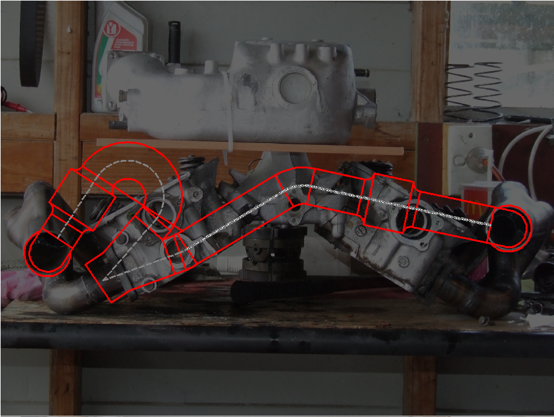
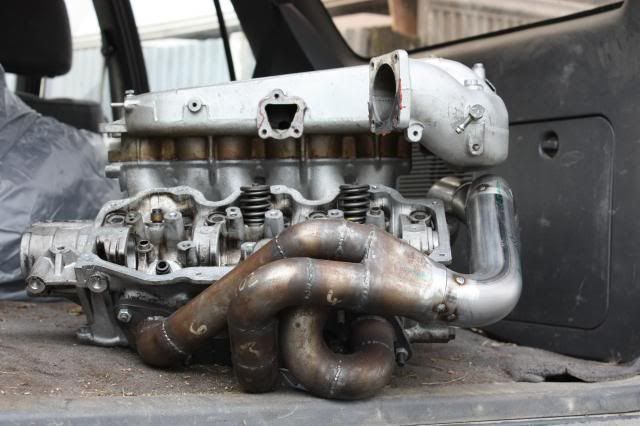
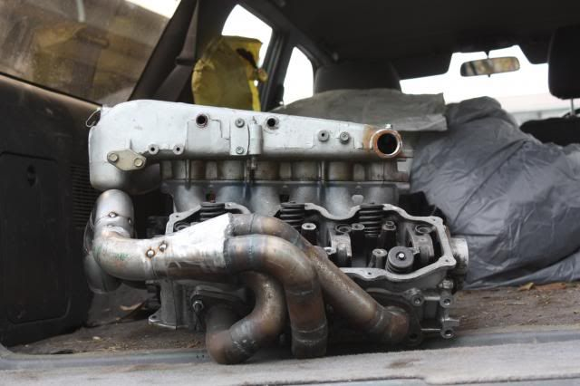
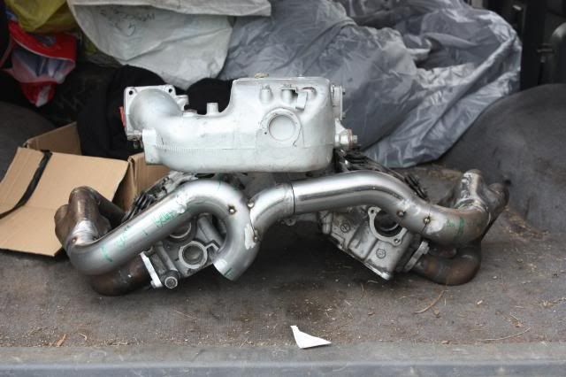
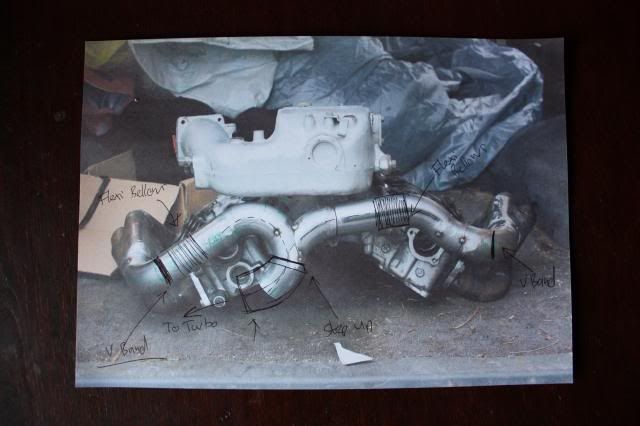

-
Re: Tubular Headers to keep turbo in stock location
I get the impression that happens alot on these boards…ZFast88Z wrote: there was to much whining and pissing about using tubular headers with turbos, and the stock location and blah blah blah.irony.cc
-
Re: Tubular Headers to keep turbo in stock location
James, ended up getting a couple of your exhaust manifold flanges from Autobend, look good, thanks. -
Been a long time to drag up this thread right ?
Sure has, GT35 on Stock manifolds wasn't good enough for me .
V bands, Turbo Flange Flexi's have been ordered, Donuts, tight radi bends are sitting on my bench.
some rough sketch's for the design of the crossover have been done. It might seem hard to believe but the length's are just about perfectly equal on the secondary's CAD dosn't lie but of couse in the real metal it needs to be measured carefully many times.

and a recap of the actual headers, now fully tig'd up
So watch out for progress, its been a while but many of you at Z31P now know that I get results on most everything i attempt.85 Turbo Slick Top
__________________________________________________ _____ -
The bigger challenge is not getting discouraged when a select few poop on your head
-
Ah yes, Having grown up a little bit with Z31P having internet arguments is just as much a part of Z31P as the 300zx or even the VG30ET itself.
All part of the process
Building that collector is going to be interesting.85 Turbo Slick Top
__________________________________________________ _____ -
How are you going to mount the turbo, v-band? -
Very interesting and its refreshing to see someone put forth so much effort on a path less traveled.
I am wondering however, where exactly the turbo placement will be.545 RWHP & 540 RWTQOriginally posted by Andrew84zx
tell her your car is so fast it will make her panties fly off

-
You Know what, I don't actually know at this point, Near ish oe position but with increased clearance for air inlets and Oil drains and large turbine housings. Once the crossover is made I'm going to have to do mockups on the car and simple put it where it works.FlawleZ;344807 wrote: Very interesting and its refreshing to see someone put forth so much effort on a path less traveled.
I am wondering however, where exactly the turbo placement will be.85 Turbo Slick Top
__________________________________________________ _____ -
Shouldn't you do that backwards? fit the turbo and lead the pipe to it? -
I'm not really too concerned about it, I will make it happen somehow , havn't got the turbo flange yet.85 Turbo Slick Top
__________________________________________________ _____ -
That's mad dude, exactly what I wanna do when I eventually get a tig welder at home.Straya, +61 -
Curious to how this setup will sound/perform when completed. Good luck and keep us updated!LaterZ" I don't want to come off sounding butt-hurt, but I really loathe most cressida owners and I'm glad I soiled their platform with a Nissan dinosaur under the hood." - Butter -
Its come out pretty much how i wanted, plenum clearance isn't too much of an issue. Considering i have a 12mm ASSCO plenum spacer not installed in the pictures clearance will be even better than the photos show.
Full tac up pretty much done, I really need the V bands and flex's to arrive before i can go any further. Once that lot as had a test fit on the car It will be time to JIG up the turbo and figure out how the hell I'm going to position/ mount it.



I'm pleased with how it fits currently, So now you have had the first progress since 2009. Expect Big progress once i get the Turbo flange and V Band's.
Looking at a stock turbo manifold today the turbo position is going to be something like In between OEM and the AC location. The thing that concerns me about the stock location is the Oil drain angle.
So I'm going to revise my statement from Stock Location tubular headers to Low Mount Tubualr Headers.85 Turbo Slick Top
__________________________________________________ _____ -
It may not be a big deal, but I would look at stepping up the pipe diameter where the two banks meet
And is that cut below the plenum for a v-band.. going to be really hard to play with the clamp in there if so… you'd be better served having one at each 3-to-1 collector, and keep the entire rear as 1 piece -
Hey GE, That is the plan, the V band at each 3-1 collector. The cut below the plenum is there on purpose. I can't progress the mockup untill my flexi bellows and V band Clamps Arrive.G-E;345044 wrote: you'd be better served having one at each 3-to-1 collector, and keep the entire rear as 1 piece
Each side will have a Flexi bellows right after the 3-1 collector.
And its not shown in the mockup yet, but right after the 2-1 merge it will be stepping up a pipe size to continue to the turbo flange.
I guess i keep forgetting to explain stuff, It all seems common sense to me but i forget that people have a hard time trying to picture it.
Like this GE
85 Turbo Slick Top
__________________________________________________ _____

Copyright © 2006–. All rights reserved. Privacy Policy